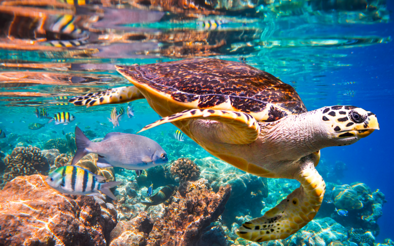

Preserving Marine Biodiversity
Marine conservation is essential for maintaining the diversity of life in our oceans. Healthy marine ecosystems support a wide range of species, which are crucial for the overall health of the planet. Protecting these ecosystems ensures that future generations can enjoy and benefit from their rich biodiversity.
Ensuring Sustainable Fisheries

Sustainable fisheries are crucial for maintaining the balance of marine ecosystems and supporting global food security. By implementing and adhering to sustainable fishing practices, we can prevent overfishing, allowing fish populations to replenish and thrive. This, in turn, ensures that future generations can continue to rely on the ocean as a vital source of food and economic opportunity.